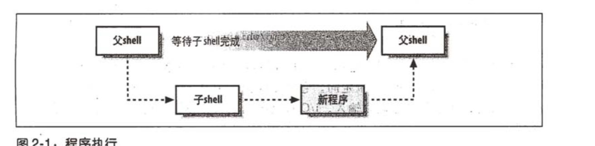

公司一位同事要离职，结果领导就把他负责的一些自动化工作交给我了，说是因为其他的同事都不懂shell，可是我也不懂啊。哎，很无奈，既然任务领导已经决定将任务交给我，那就是对我的信任。就这样对自己安慰着。默默的下载了一本shell入门书籍《Shell脚本学习指南》，先从基础慢慢学着，希望他走之前我可以胜任这份工作。
废话不多说了，总结一下今天对shell的学习成果。
shell脚本是一种解释型语言，它有以下优势：
- 简单性
shell可以简洁的表达复杂的操作。 - 可移植性
使用POSIX所定义的功能可以无须修改就可以运行在其他系统上。 - 开发容易 可以在短时间内完成一个功能强大的好用脚本。
shell识别4种基本命令：
- 内建命令(build-in)
内建命令就是由shell本身所执行的命令。一般执行效率较高。例如：read, test, cd, echo, printf等都属于内建命令。 - shell 函数
shell函数是功能健全的一系列程序代码，可以像命令一样引用执行。 - 外部命令
外部命令由shell的副本<新的进程>所执行的命令； - 系统命令
系统命令也属于外部命令，只是系统内部包含而已。有不少系统命令与内建命令名称相同，功能也大体相同。但是效率低于内建命令。例如：echo命令与/bin/echo是两个不同的命令，前者为内建命令，后者为系统命令。
注意：其中系统命令也属于外部命令。
内建命令与外部命令
内建命令指bash(或者其他版本)工具集中的命令。一般有shell直接执行，不需要产生子进程执行。
外部命令和系统命令：需要fork出一个子进程执行。
外部命令执行过程
- 建立一个新的进程。此进程即为shell的一个副本。
- 在新的进程里，在PATH变量内所列出的目录中，寻找特定的命令。/bin:/usr/bin:/usr/X11R6/bin:/usr/local/bin为PATH的变量典型的默认值。
- fork一个新的进程取代现有shell进程执行
- 程序完成后，最初的shell父进程回接着从终端读取下一条命了，或执行脚本里的下一条命令。 如图

学习到的几个命令
type：打印命令类型
type echo
#cd is a shell builtin, cd是内建命令
type /bin/echo
#/bin/echo is /bin/echo, /bin/echo是系统命令
type -a echo
#echo is a shell builtin
#echo is /bin/echo
#echo命令有两个，一个是内建，一个是系统命令
命令的组成部分
- 命令名称
命令的第一项，必须有。 - 选项
选项的开头一般是一个'-'号开头，后跟一个字母。选项并非必须，可有可无。选项有长选项，开头会包含一个或者两个'-'符号，具体由命令本身决定。选项后若无参数可以与其他选项合并。如:ls -lt file.c. - 参数
一般跟在选项之后，并非必须，可有可无。
命令分隔符
多个命令可以写在一行，命令之间需要有';'分号隔开，按序执行，前一个命令执行完毕后再执行下一个命令。
如果一行中多个命令使用'&'隔开，则shell会在后台执行'&'前的命令，而无需等待期前的命令执行完毕即可直接执行后面的命令。